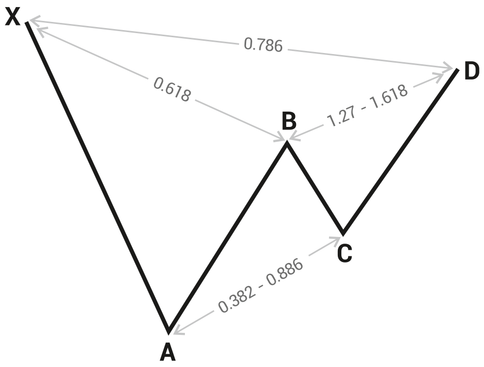

<!DOCTYPE html>
<html>
</html>
<head>
  <meta charset="utf-8">
  <meta http-equiv="X-UA-Compatible" content="IE=edge">
  <title>外汇站（fx-z.com） - 和谐价格形态</title>
  <meta name="description" content="">
  <meta name="viewport" content="width=device-width, initial-scale=1">
  <meta name="robots" content="all,follow">
  <!-- Bootstrap CSS-->
  <link rel="stylesheet" href="vendor/bootstrap/css/bootstrap.min.css">
  <!-- Font Awesome CSS-->
  <link rel="stylesheet" href="vendor/font-awesome/css/font-awesome.min.css">
  <!-- Google fonts - Roboto-->
  <link rel="stylesheet" href="https://fonts.googleapis.com/css?family=Roboto:400,300,700,400italic">
  <!-- owl carousel-->
  <link rel="stylesheet" href="vendor/owl.carousel/assets/owl.carousel.css">
  <link rel="stylesheet" href="vendor/owl.carousel/assets/owl.theme.default.css">
  <!-- theme stylesheet-->
  <link rel="stylesheet" href="css/style.default.css" id="theme-stylesheet">
  <!-- Custom stylesheet - for your changes-->
  <link rel="stylesheet" href="css/custom.css">
  <!-- Favicon-->
  <link rel="shortcut icon" href="img/favicon.png">
  <!-- Tweaks for older IEs--><!--[if lt IE 9]>
    <script src="https://oss.maxcdn.com/html5shiv/3.7.3/html5shiv.min.js"></script>
    <script src="https://oss.maxcdn.com/respond/1.4.2/respond.min.js"></script><![endif]-->
</head>
<body>
  <div id="all">
    <div class="container-fluid">
      <div class="row row-offcanvas row-offcanvas-left"> 
        <!--   *** SIDEBAR ***-->
        <div id="sidebar" class="col-md-4 col-lg-3 sidebar-offcanvas">
          <div class="sidebar-content">
            <h1 class="sidebar-heading"> <a href="https://fx-z.com">fx-z.com</a></h1>
            <p class="sidebar-p">介绍外汇相关的基本知识，告诉您如何进行自己的技术面和基本面分析，讲解先进的交易理念，并且为您阐述失败交易者与专业交易者之间的真正区别。 </p>
            <p class="sidebar-p">通过这些课程的学习，您将学会如何根据自己的优势来应用情绪分析，还将了解真实世界的事件会对货币汇率产生什么影响，央行在外汇市场中所发挥的作用，以及交易者在颇受欢迎的即期外汇交易中有哪些选择方案。 </p>
            <ul class="sidebar-menu">
                <!-- Link-->
                <li class="sidebar-item"><a href="https://fx-z.com" class="sidebar-link">首页</a></li>
                <!-- Link-->
                <li class="sidebar-item"><a href="cihui.html" class="sidebar-link">外汇词汇</a></li>
                <!-- Link-->
                <li class="sidebar-item"><a href="ebook.html" class="sidebar-link">获取外汇电子书</a></li>
            </ul>
            <p class="social"><a href="https://www.cn-forextime.com/zh?partner_id=4920383" target="_blank"data-animate-hover="pulse" class="external facebook"><i class="fa fa-eur"></i></a><a href="https://www.cn-forextime.com/zh?partner_id=4920383" target="_blank" data-animate-hover="pulse" class="external gplus"><i class="fa fa-gbp"></i></a><a href="https://www.cn-forextime.com/zh?partner_id=4920383" target="_blank" data-animate-hover="pulse" class="external twitter"><i class="fa fa-rmb"></i></a><a href="https://www.cn-forextime.com/zh?partner_id=4920383" target="_blank" title="" class="external instagram"><i class="fa fa-dollar"></i></a><a href="https://www.cn-forextime.com/zh?partner_id=4920383" target="_blank" data-animate-hover="pulse" class="email"><i class="fa fa-money"></i></a></p>
            <div class="copyright text-center text-md-left">
             
              
            </div>
          </div>
        </div>
        <!--   *** SIDEBAR END ***  -->
        <!--   *** DETAIL ***-->
        <div class="col-md-8 col-lg-9 content-column white-background">
          <div class="small-navbar d-flex d-md-none">
            <button type="button" data-toggle="offcanvas" class="btn btn-outline-primary"> <i class="fa fa-align-left mr-2"></i>菜单</button>
            <h1 class="small-navbar-heading"> <a href="https://fx-z.com/9-5.html">下一篇 </a></h1>
          </div>
          <div class="row">
            <div class="col-xl-10">
              <div class="content-column-content">
                <h1>和谐价格形态</h1>
    <p>
    和谐价格形态可识别回调阶段，以便您在形态完成时获得明确的买入或卖出信号。任何时候的回调都令人感到棘手，而且任何帮助总会受到欢迎，尽管正统理念是借助斐波纳契数字应用于和谐价格形态中。再次，斐波那契数字的理念尚未证实，而且实际上有大量证据显示，斐波那契数字在证券价格中（包括外汇）仅出现机会所允许的次数。然而，当完美或近乎完美的斐波那契数字确实出现时，许多交易者将看到这一点并实现预期结果，因此放弃基于斐波那契的交易理念并不划算。
</p>
<p>
    请注意，和谐价格形态与经典图表形态头肩形态、双重顶等）无关。介绍和谐形态的主要书籍为 Scott Carney 写作的《和谐交易者》（1999 年）和《金融市场和谐交易，卷 1 和卷 2》（2010 年）。近年来，和谐形态在外汇行业中越来越普遍，而且已推出专门的和谐形态软件。与所有基于斐波那契数字的交易理念一样，和谐形态识别需要进行大量的实践、重新绘制和重新计算，因为这些数字很少准确无误地击中应该到达的位置。但是，关注回调有助于改善交易绩效，因为回调是大部分亏损的聚集之处。
</p>
<p>
    有意思的是，有些人能够“见到”和谐形态，而有些人不行，即使软件能够帮助他们进行复杂的计算。和谐形态的支持者称这些数字每天出现数百次，每周出现数千次；如果这种情况属实，您应该能够在任何时间周期内选择任何图表，并在数秒内找到七八个标准和谐形态。我们可以在任何图表上毫不费力地找到其他技术现象，但和谐形态不行。因此，此处的插图必须是一个典范。参见下图。它是基本的 ABCD 形态，以及“看跌伽利形态”。其他形态是这种核心理念的变体，包括蝙蝠、蝴蝶、螃蟹和鲨鱼形态。请注意，伽利形态得名于 H.M. Gartley——1935 年 《股市利润》（Profits in the Stock Market ）一书的作者。虽然 Gartley（伽利）已识别价格波动次序，但他并未使用斐波那契数字。
</p>
<p>
     看跌伽利和谐形态比率
</p>
<p>
    无论 Gartley 的发现有多么久远，这种观察是可用的。Gartley 指出，极端短期波动（例如从 X 到 A）之后通常会出现幅度更小的调整（从 B 到 C）。这种调整发生在需求枯竭时——每个打算买入的人已经买进。但如果安全性在某种程度上进入“议价”状态，早期买家将返回市场，导致价格从 C 上涨到 D。如果上涨至最高点 X 之后，价格波动在 D 点挫败，那么反弹结束。市场心理非常明显，而且价格波动可以通过供给和需求来解释。
</p>
<p>
    和谐形态的支持者将斐波那契数字添加至基本的变动调整变动恢复模式。其关键原则在于，价格从 X 点大幅运动至 A 点后，将从 A 点回撤 61.6% 至 B 点，然后将回撤 38% 至新低点——C 点。接下来，它将上涨至 D 点；由于未能到达和越过 X 点，则形态看跌。结果，您在 D 点卖出。问题是，从 D 点回落后，价格创下新高的情况经常发生。
</p>
<p>
    A 点到 B 点变动 61.8% 的情况确实经常出现。但之后 B 点到 C 点变动 38% 的次数有限。请注意，和谐形态的规则是指,无论 X 点和 D 点之间有什么形态，价格未能到达和突破起始高点代表着看跌信号。
</p>
<p>
    <strong>您知道吗？</strong>
</p>
<p>
    技术分析的先驱 Welles Wilder（ATR、RSI、抛物线逆转以及许多其他指标和清晰的思维方式的发明者）在晚年时期想象自己发现了一种不同的“隐藏于所有市场中的秩序”。在《Delta 理论》（1991）一书中，Wilder 采用了昼夜节奏（基本的 24 小时每日周期）的倍数。短期“delta”为四天，中期为四个月，长期为四年等。Delta 系统从未进入主流的原因很简单，即虽然有一些交易者仅仅出于对 Wilder 的尊敬而相信它能带来利润，但它的用途不是产生利润，。换言之，Wilder 选择将重点放在基于时间，而不是基于斐波那契价格参数的周期变化的必然性。谁会说究竟是时间还是价格更重要呢？
</p>
<p>
    <br/>
</p>
<p>
    <br/>
</p>
              </div>
            </div>
          </div>
        </div>
      </div>
    </div>
  </div>
  <!-- JavaScript files-->
  <script src="vendor/jquery/jquery.min.js"></script>
  <script src="vendor/popper.js/umd/popper.min.js"> </script>
  <script src="vendor/bootstrap/js/bootstrap.min.js"></script>
  <script src="vendor/jquery.cookie/jquery.cookie.js"> </script>
  <script src="vendor/owl.carousel/owl.carousel.min.js"></script>
  <script src="vendor/masonry-layout/masonry.pkgd.min.js"></script>
  <script src="js/front.js"></script>
</body>